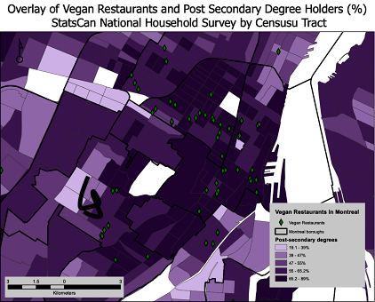
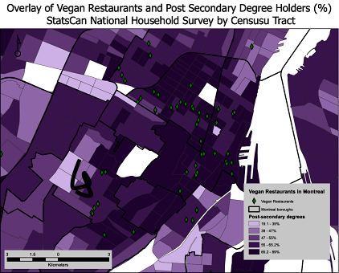

My Portfolio
GIS Projects
Give a short intro/description of what gis is and why it is important
Research Paper examining the Optimal Placement of a New Subway Station in Brooklyn, New York
This research paper argues that the construction of a new subway station in Red Hook, Brooklyn represents an ideal investment for the municipal government of New York. This investment in public transit will lead to increased social and economic mobility for its low-income residents, as they will rely heavily on the new public transit option.
Open ReportVector GIS Business Applications Assignment
For the purpose of this assignment, I was theoretically hired by Paradigm (www.paradigm.com), a Canadian company that sells mid-to-high end quality speakers. They target a small market segment know as "Audiophiles". This assignment entailed finding a good location in the Platea neighborhood of Montreal (St. Laurent/St. Denis and Avenue Mont-Royal area) for a new Paradigmn storefront that will cater to these audiophiles. Market research revealed that their target market is typically male, between the ages of 30 and 44, with an average yearly household income of greater than $35,000. Their target individuals live in condominiums and townhouses in the Plateau, and do not own cars. The new store should be located within 1km from a high concentration of this target market.
Vector GIS Public Health Location Allocation Applications Assignment
This assignment involved merging 7 community health centers (Centre local de Services Communitaire) into 2 for the region around downtown Montreal, as part of the Health Minister of Quebec's aggressive cost-cutting policy. I was required to advise which community health centers to close with minimal impacts on accessibility, while simulteanously determining if a new CLSC can be built at a “better” location by recommending a new candidate site for a new facility.
Raster GIS Disease Identification Applications Assignment
For all intents and purposes, I have been hired as a consultant by the World Health Organization and contracted to prepare a map that identifies all regions in West-Africa where there is a high risk of Malaria. Moreover, I have also been tasked with preparing a map displaying the location of the hottest recorded monthly temperature.
Programming Projects
Python
Through a geography/comp sci course at here at McGill, GEOG 407 I gained exposure to the programming language Python. I've had previous experience with Java, but was quickly converted to Python due to its greater functionality and intuitive nature. Coming from a GIS perspective, I really came to appreciate Python when I realized that it contained certain open-sourced libraries that enabled the creation and dissemination of geospatial data, like ESRI shapefiles. This was the very same type of data that i've been using for years to undergo GIS-based analysis.
This particular course culminated with a very interesting final assignment. I was provided with data containing a sample of buildings on the island of Montreal. An certain percentage of these buildings held information about their "place category", i.e. cafe or bank. My Task involved prompting a user for a radius in meters and a pair of coordinates, and then calculating the total area of each place category that intersected with the user-defined region.
What really struck me about this assignment was the sheer scale of potential that came with being able to do like-minded work. Once i'd successfully created the python script, I realized that as long as I found suitable geospatial, I could repeat that same analysis on any place on earth.


For the research project of my Montreal Urban Field Study course, Python was instrumental in the development of the data that I then analyzed, consequently grounding the thesis with data. I harnessed the power of the open-sourced Geopandas library to create an ESRI Shapefile containing the place name and location of every vegan/ethically conscious restaurant located on the island of Montreal.
When this was joined with Stats Canada Census data, a GIS analysis of the socioeconomic trends of areas with a high density of ethically conscious restaurants took place.
The conclusions derived from the data analysis suggested that ethically conscious individuals were
- near public transit
- employed
- university educated
 

Through Python, I came to familiarize myself with and use ArcPy, ESRI's industry leading Python site package. ArcPy grants an effective way to do geographic data analysis, data conversion, data management, and map automation with Python. I utilized ArcPy to create and update vector GIS datasets, as well as to create ArcMaps toolboxes. These very same ArcMaps toolboes are what enables GIS users to undergo the most fundamental levels of geographic analysis, and thus are very useful.
Web and Mobile Applications
Tracking Web Application
As one of the assignments for a GeoWeb course I took, my group was tasked with creating a web application that harnessed the GPS on mobile devices to track our movements around the city. We created the web browser that was mobile friendly using HTML, CSS and JavaScript. In order to track our movements, we simply had to open the browser on our phones and input a password. Our crowdsourced data was then displayed on an online map linked to our browswer.
Link to Web Tracking ApplicationSpatial Distribution of Different Groups in Montreal Application
An effective way to close the citizen-city divide and raise awareness about the social dynamics of the people of Montreal is through providing more open-data regarding the living patterns of different ethnic groups in Montreal. This web browser was created to digitally demonstrate the population density trends of distinct minority groups in Montreal's neighborhoods from 1996 to 2016.
Link to BrowserSustainable Development Initiatives
Barbados UNDP SGP Internship
As part of my Barbados UNDP Small Grants Programme internship, I worked in a three-person team to develop a sustainable private sector finance model to faciliate the outfitting of fishing vessels with renewable energy. We engaged with various actors and organizations, from local boat owners to solar energy companies and local Barbadian credit unions. During this experience, I leveraged my ability to understand the different actor's motivations to create outcomes that benefitted all stakeholders, while ensuring positive environmental change. This internship culminated with the creation of a solar panel base model designed for boats and of a special "fishers" loan available at local credit unions featuring long rebatement periods and low interest rates. We presented the findings from our internship to the public at the end of semester research symposium. The synthesis of this sustainable finance mechanism definitely had a strong positive impact on the effort to green the fisheries, as it drastically reduced the use of petrol to run the boat and its on-board devices, while also significant enhancing fishermen's safety.
Sustainable Finance Model Report
Paper Analyzing Unconventional Fossil Fuel Extraction Methods and their Impact on the Environment
This paper explores two recent unconventional fossil fuel extraction methods, specifically the mining of tar sands and fracking through a cost-benefit analysis. This analysis seeks to understand their role in propagating the current phenomenon of human-induced climate change.
Full ReportSmart New Cities Research
In the last year or so, I have become fascinated with the rapidly growing phenomenon of smart cities. Today, more than half of the world's population lives in cities, so its very important to understand the keep up with the rcent urbanization trends. Despite the lack of a universally accepted definition, I would define a smart city as an urban area that leverages emerging technologies to improve many of its systems and services like transportation, education, energy generation, public safety and safety, recycling, and trash collection while simulteanously enhancing its ecological reslience to climate change and ameliorating the citizen-city relationship. Smart cities are beneficiaries of a new method of urban planning that prioritizes collaboration, co-creation, crowdsourcing, technology and grass roots efforts.
Op-Ed on Bill Gate's proposed smart city, Belmont
Bill Gates has officially stated that his foundation intends to develop a new smart city called Belmont in the outskirts of Phoenix, Arizona. This smart city is featured to have a fully autonomous vehicle transportation system and be fully renewably powered. My opinion piece delves into the benefits and limitations of the chosen location, promising developments and the perceived feasability of the project.
Opinion Paper on BelmontResearch Paper on Saudi Arabia Vision 2030 and the development of its new smart cities, KAEC and NEOM
This paper analyzes Saudi Arabia’s comprehensive national transformation program, Vision 2030 from a critical socio-economic perspective, and will also examine the contributions of the master planned cities of KAEC and NEOM to meet fulfilling Vision 2030’s proposed goals. Vision 2030 is an ambitious and financially risky long-term economic development policy for the Kingdom of Saudi Arabia. The vision’s objectives involve reducing dependence on oil, privatizing the economy by creating new channels for economic growth, expanding employment opportunities to its youth and to catalyze greater international involvement domestically. These goals aim to act in unison to direct Saudi Arabia towards a knowledge-based economy. KAEC is quickly becoming the industrial and economic powerhouse of the Kingdom, while NEOM promises to revolutionize the way we approach living.
Full Report on Saudi Arabia Vision 2030, KAEC and NEOMSocial Entrepreneurship
Collaboration with 60 Million Girls Foundation
A major part of my Social Entrepreneurship and Innovation course involved synthesizing a social business model for the Montreal-based foundation, 60 Million Girls. A Social Business Model Canvas provides a powerful visual tool to help with business model design. Social enterprises take a business approach to achieving their mission and making a difference. To ensure lasting impact, they require a viable business model. Moreover, the creation of this social business model outlined methods of how 60 Million Girls can make their projects more financially sustainable.
60 Million Girls is dedicated to improving girls’ access to quality education in developing countries through the use of technology. Wanda Bedard, 60 million girls’ founder and president, established the foundation to address a glaring need: 60 million primary-aged girls around the world were out of school, more than half the global total at the time. Their objective is to support two major education-related projects in developing countries every year. Their aim is to reduce gender disparity in school enrolment by ensuring at least half of the students impacted by each project are girls.
What is interesting about 60 Million Girls is that take a techno-centric approach to improving access to quality education in the Global South. In the vast majority of their projects, they deploy Mobile Learning Labs (MLLs). An MLL is an digital educational system comprised of 30 tablets, chargers, a solar-power energy generation home system, and a device that stores educational content in various mediums and connects to the tablets via a bluetooth connection. MLL's have bene hugely successful in providing children, especially girls with access to modern education.
Start-Up Plan for 60 Million Girls